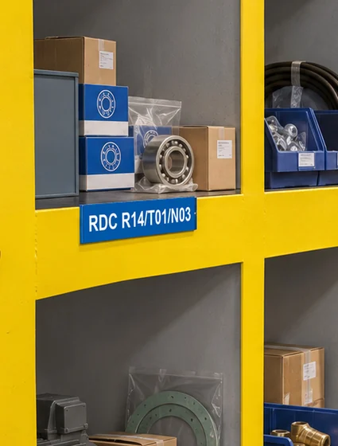
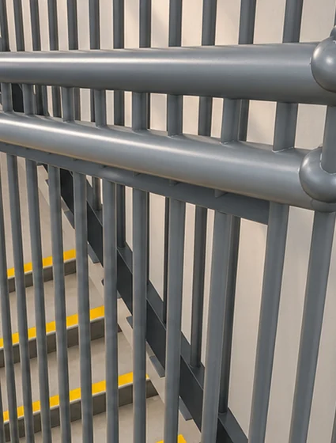
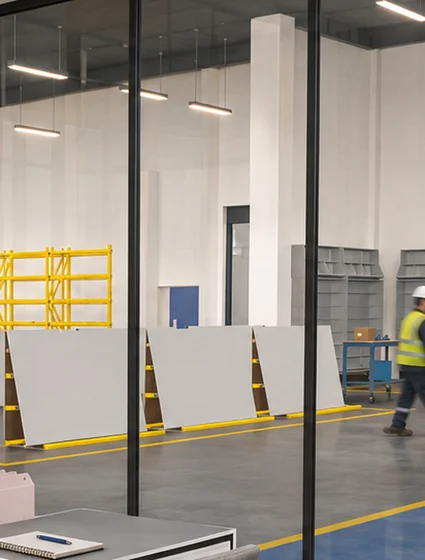

01
Réceptionner
Le comptoir et les rangements proches forment le premier point de réception des marchandises.
Un magasin pour
Magasin de pièces de rechange
Holcim Meknès
Le parcours des pièces
Le couloir bleu donne la direction. Les rayonnages jaunes indiquent le stock. Le comptoir marque l’entrée des marchandises.
01
Le comptoir et les rangements proches forment le premier point de réception des marchandises.
02
Les allées donnent accès aux différentes familles de pièces, jusqu’aux réserves de l’étage.
03
Le stockage des moteurs et la préparation occupent une aire de travail dédiée.
La palette / Matières et repères
Au magasin, les couleurs et les matières distinguent les circulations des zones de travail.




La galerie complète
Aucune vue ne correspond à ces filtres.
Meknès / Documents du projet